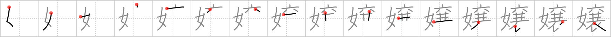

嬢
← →
lass

Reading:
On-Yomi: ジョウ — Kun-Yomi: むすめ
Heisig story:
Woman . . . grass skirt.
Koohii stories:
1) [Katsuo] 18-4-2007(203): Conversation at a party: A: "Who is that lass?" B: "Which one?" A: "The woman wearing the grass skirt." B: "Alas, I don't know".
2) [Beneus] 1-1-2009(46): "There once was a lass, whose skirt was made of grass…" insert your own humorous ending.
3) [Howdoken] 1-5-2008(20): The correct term for a WOMAN in a GRASS SKIRT is a LASS, ask any Hawaiian.
4) [xxinde] 30-6-2011(19): LASS is short for LAdy-in-a-skirt-made-of-graSS.
5) [hirai] 8-11-2007(19): Two Irishmen visit Hawaii and see a woman wearing a grass skirt and nothing else. "That's some lassie," says one to the other. "But alass Danny Boy, you can't be bringing her home.".